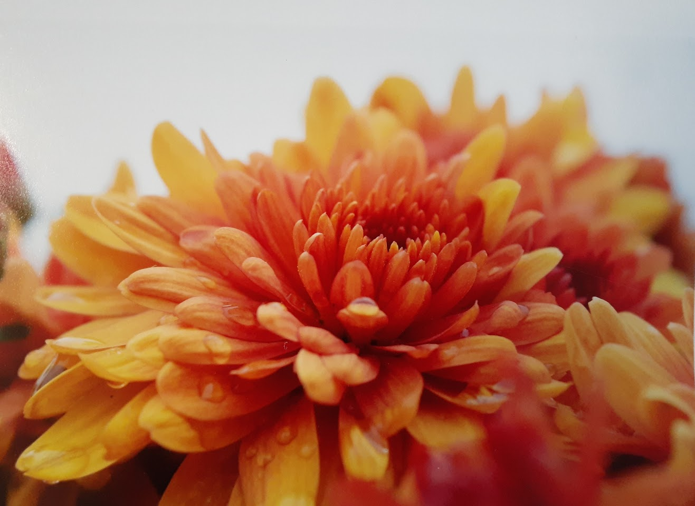
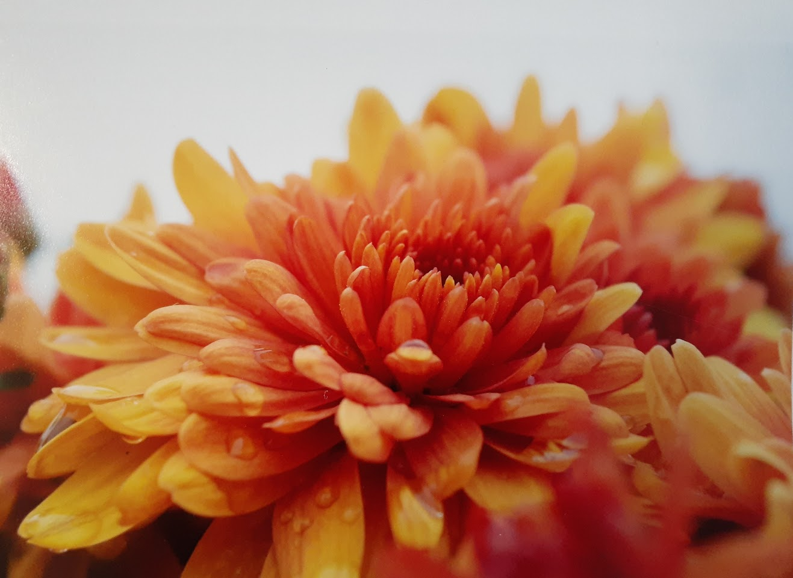
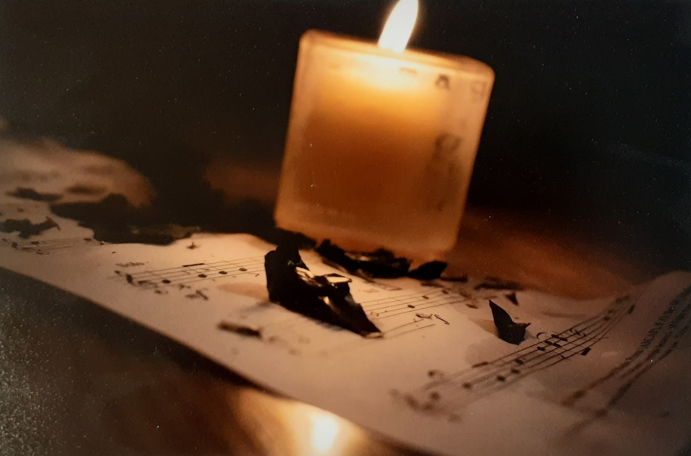
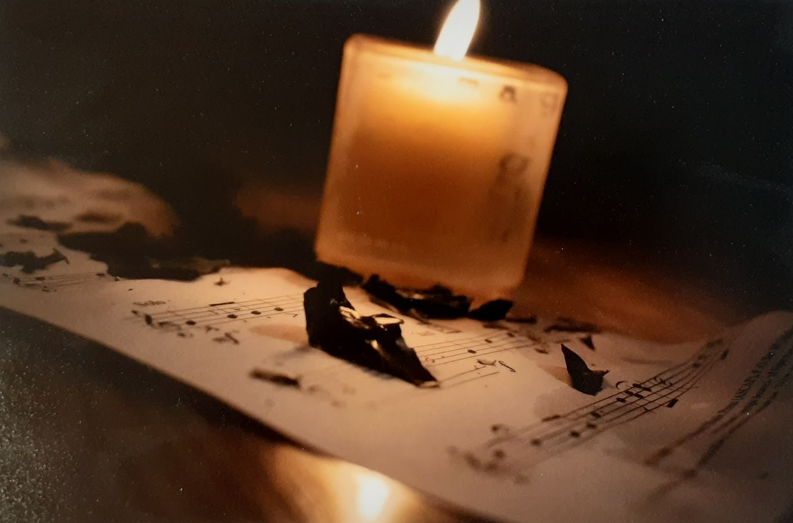

About Me

My name is Jamie Breeden. I am an artist who was born and raised in Mounds View Minnesota. For as long as I can remember, I have always had an interest in many different forms of art. My earliest interest is musical, because I have been playing trumpet for nearly twelve years. My skills range from traditional mediums, such as drawing, painting, and ceramics, to beautiful photos shot by me. My other skills, while being more recent, include photo editing projects to change their aesthetics. I have also found a passion in video editing, filming, and writing.

My Work and School Experience
For almost four years now, I have been a proud employee of Rapit Printing, located in New Brighton Minnesota. During the months of Summer, when I am not taking classes at the University of Wisconsin of Eau Claire, I am working in different positions at Rapit Printing. I have experience in operating an embroidery machine, where I would input designs into the program for it to embroid into clothing. I was also responsible for making sure the machine operates correctly, and to report any mistakes or damages. When I wasn’t working in embroidery, I had responsibilities in the bindery departement. I would put together the materials provided to complete projects before sending them to clients. In regards to my education, I am working towards a major in Illustration, and a minor in Multimedia Communications. While I complete my education, I am part of different on campus organizations, such as the Blugold Marching Band, and the Art Student Organization.My Portfolio
Here, you will find my work so far.


 

 
